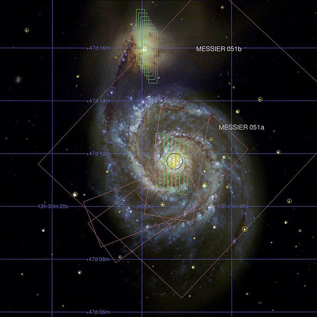

The Montage toolkit provides a broad array of tools for manipulating astronomical images and in particular supports mapping between projections and coordinate systems, background matching within a set of overlapping images, and mosaicking of large numbers of images into a single view. The Montage mViewer module makes it easy to visualize these images and associated spatial data.
|  |
The documentation menu on the left provides details on how to use mViewer in three environments:
|